The Frog Invites the Mouse for a Swim
Once upon a time, in a bright green meadow, lived two very different best friends. Monty was a tiny, fuzzy mouse with a twitching nose, and Flippy was a bouncy brown frog with big and strong legs.
One sunny morning, Flippy was happily splashing around in the sparkling blue pond. He spotted Monty standing on the grassy bank and called out, “Hey, Monty! Come on in! The water feels wonderful. Do you know how to swim?”
Monty shook his head. “No, Flippy. I’d rather stay right here on the grass, thank you.”
Flippy hopped onto a lily pad. “Oh, give it a try. You’re so good at climbing and running. Why are you so scared of water?”
“It’s not about being scared, “Monty replied gently. “Why should I choose death knowingly?”
Flippy did a big back flip into the water. Splash! “Look how I swim! It’s so easy and fun.”
“You’re an expert swimmer—go ahead and continue,” Monty said.
“I’m sure I saw you swimming in the big river last spring. You were moving so fast!” Said Flippy.
Monty sat down and thought back to that day. “You’re right, Flippy. Not once, many a times I had swam.”
“Then join me now. We’ll enjoy swimming together,” said Flippy.
“You saw me swimming, but do you think I was enjoying it? I was swimming desperately to save my life. A big rainstorm flooded my cozy burrow, and I was swept away! I had to paddle with all my might just to get back to the bank. It was so scary.”
He looked at his friend and smiled. “To save my life, I would even walk through fire, not just a river. But I cannot risk my life for such a hobby. Mice belong to the land where as frogs belong to both land and water.”
Flippy stopped splashing and thought about what Monty said. He realized that even though he loved water, it wasn’t the same for his friend.
“I understand now,” Flippy said, hopping back to the shore to sit with Monty. “I’m glad you’re safe on the grass, and I’m glad we can still be friends right here.”
The two friends spent the rest of the afternoon sharing a snack in the warm sunshine—one resting on a lily pad and the other sitting comfortably on a clover.
The Moral of the Story:
True friends respect each other’s differences and choices.
The Best Kind of Victory
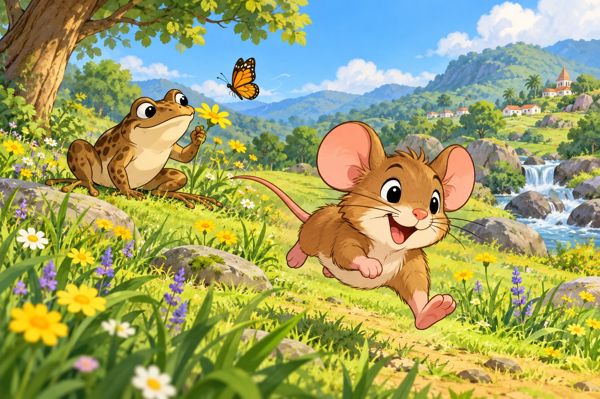
Monty, the mouse was very fast and loved to run, while Flippy the frog was a happy-go-lucky fellow who loved to hop and look at the clouds.
One sunny morning, Monty was feeling very energetic. He stretched his tiny whiskers and said, “Flippy! Brother Frog! Let’s have a race!”
Flippy blinked his big, round eyes and smiled. “A race? That sounds fun! But where should we run?”
Monty pointed his little paw towards a wide, grassy field on the other side of the pond. “Look over there!” he said. “That field is the perfect place for a race. Let’s go there and see who can reach the other side first!”
The two friends walked to the starting line. Monty took a deep breath, and Flippy crouched down.
“Ready... steady... GO!” shouted Monty.
The race began! Monty’s little paws moved like lightning—patter-patter-patter—as he dashed across the grass. Flippy, on the other hand, went “Boing! Boing!” He would take a giant leap, land, and then stop for a second, look around, sniff a yellow wildflower or watch a butterfly fluttering by. Then, he would remember the race and take another big jump.
But Monty kept running non-stop without pausing even once. He kept his eyes on the finish line and ran straight ahead. Soon he reached the very end of the field. Flippy was far behind Monty. Monty was so happy that he started dancing in circles. “I won! I won!” he declared proudly. “I am the fastest mouse in the world!”
After a while, Flippy arrived hopping along. Even though he did not win, he had a huge grin on his face. As soon as he reached Monty, he started jumping up and down with joy. “Hooray!” Flippy cheered. “Monty, you did it! You won the race! You were so fast!”
As they walked home, skipping and laughing together, Monty felt a bit confused.
“Flippy, why are you so happy? You didn’t win.”
Flippy let out a cheerful croak. “My dear friend won the race! Why shouldn’t I be happy about that?”
Monty stopped walking. “But Flippy, every time I challenge you to a race, you always say yes. And every time, you lose. Why do you still agree to play if you know you won’t win?”
Flippy looked at Monty with a kind smile. “It doesn’t matter to me if I lose, Monty. You are my best friend, and you are the one who won! When you are happy, I am happy too. Your victory is my victory. That is what true friends do—they celebrate each other!”
Monty felt a warm glow in his heart. He realized that while winning the race was nice, having a friend like Flippy was the real prize. “You know what, Flippy?” Monty said softly. “It is very hard to find a friend as wonderful as you.”
And so, Monty and Flippy walked home together, knowing that the best kind of win is the one you share with a friend.
The Moral of the Story
True friends do not compete. They celebrate each other’s victory as their own.
Everyone Is Special
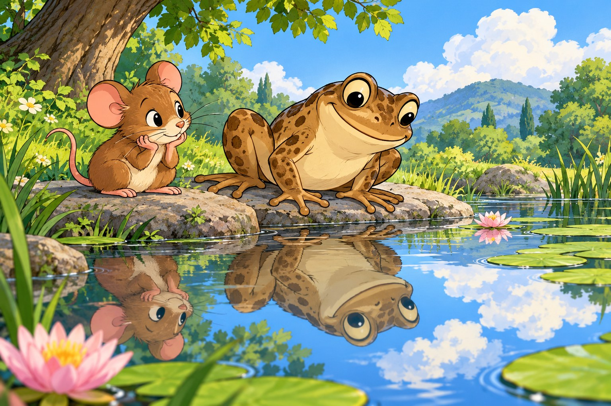
One sunny afternoon, Monty the Mouse was sitting by the pond, grooming his soft, thin fur. He looked over at his friend, Flippy the Frog, and had a cheeky thought.
“Flippy! Brother Frog!” Monty called out. “Have you ever looked at yourself in the mirror?”
Flippy blinked his big eyes. “A mirror? Why?”
“Well,” Monty said, twitching his nose, “If you looked in a mirror, you would see how you really look !”
Flippy smiled a wide, froggy smile. “But Monty, this pond is the biggest mirror in the world! The blue sky looks into it. The moon and the stars look into it. Even the fluffy clouds see themselves here. I look at my face in the water every single day. This pond is my mirror!”
Monty crossed his little paws and said, “So, you have actually seen your own face?”
“Yes, of course I have!” Flippy replied happily.
Monty looked at him with pity and said, “Doesn’t it make you feel sad?”
Flippy was confused. “Sad? Why would I be?
“Well,” Monty said softly, “Your eyes are so big and bulgy! And your skin... it is so thick and bumpy. To be honest, it looks a bit messy and strange.”
Flippy didn’t get angry. He calmly said, “We are all made the way Nature intends us to be.”
But Monty insisted, “Just because Nature made you that way doesn’t mean it’s good! I think Nature has been unjust to you.”
Flippy thought for a second and then asked, “Monty, can you jump into this pond and swim with me?”
Monty quickly jumped back in fear. “Do you want to drown me? If I go into that water, my beautiful fur will get wet and heavy. My skin is very thin; the cold water would give me a terrible chill! I might even get sick and lose my life!”
Flippy nodded wisely. “You see, Monty, the water doesn’t harm me at all. I can swim and dive easily in water all day. Do you know why? It’s only because Nature has given me this thick, tough skin to protect me from cold water. And Nature has made me earthy brown so I can hide in the mud and stay safe from my enemies. So, instead of being sad, I thank Nature everyday for making me exactly this way.”
Monty stopped twitching his nose. He became quiet and mused deeply about what Flippy had said.
Flippy looked at his friend and asked gently, “Do you understand now, Monty? It isn’t about how we look—it’s about how we are made to live.”
Monty looked at his own thin fur and then at Flippy’s strong, bumpy skin. He finally understood that everyone is perfect just the way they are.
The Moral of the Story:
We should not judge anyone by look. Everyone is made in a special way, and every difference has a purpose.
The Frog’s Winter Home
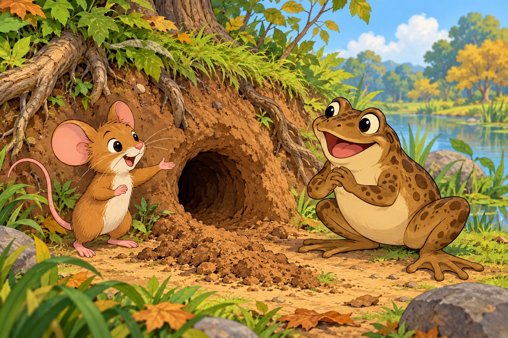
One day, Flippy the Frog and Monty the Mouse were chatting beside the pond. Flippy looked a little worried.
“Brother Monty,” Flippy said, “You are an expert at digging. Could you please dig a deep hole for me?”
Monty was surprised. “A hole? Why do you need a hole, Flippy?”
“I need to go into a long winter sleep,” Flippy answered.
“Why go into hibernation for no reason? Let’s happily dance, jump, and sing here during the winter days,” said Monty.
“You see, hibernation is absolutely necessary for us as we frogs are cold-blooded. When winter comes, our bodies get even colder. To stay warm and safe, we hide deep under the soil and sleep until spring. During that period, we even stop eating and drinking, “Flippy explained.
He continued, “I usually dig a small hole near the pond. But sometimes people dig that area, remove the mud and disturb my sleep. I have to go through a lot of trouble. So, I have decided to build a new house where I can hibernate comfortably. You are an expert digger. You please dig such a secret home where no one can find me.”
Monty agreed. He felt it right to help his friend. They looked for the perfect spot. Flippy wanted it near the pond, but Monty said, “No, the soil there is too sticky for me. My teeth and paws work better in firm, dry soil. Let’s dig further away, near the high bank.”
Flippy agreed. Monty began digging. He worked tirelessly until he made a deep and sturdy tunnel. At last, he said proudly, “Friend, your home is ready! You can move in now.”
“Not now,” Flippy said. “This is my ‘Winter Palace.’ I will move in only when the cold winds begin to blow.”
He waited for the arrival of winter.
Months passed, and winter finally arrived. Flippy grew sleepy as the air turned cold. His blood felt icy cold. To prepare for his long sleep, he ate plenty of bugs and worms until he became quite fat and round.
Slowly, Flippy hopped towards his new home with Monty by his side. Monty looked at his friend and giggled. “Oh dear! Had I known you would grow so fat, I would have made the door much bigger!”
“There’s no time to change it now,” Flippy yawned. “I feel so tired. I must sleep. We will build a bigger one next year.”
As Flippy poked his head into the hole, a terrifying hissing sound was heard from inside.
Suddenly, a long, dark snake darted its head out of the hole! Monty and Flippy jumped back in fear.
“Who goes there?” the snake hissed angrily. “Who dares to enter my house?”
“Your house?” Flippy cried. “This is my house!”
“I dug this hole with my own paws!” Monty added bravely.
The snake hissed even louder. “I don’t care who dug it! I am living here now, so it belongs to me. Leave at once before I devour you both!”
Monty and Flippy fell silent. Arguing with a wicked creature like a snake was like inviting death. Both of them ran for their lives as fast as they could towards the pond.
After catching his breath, Flippy said, “You know what, Monty? My small, messy hole by the pond isn’t so bad after all. At least it’s safe from snakes!”
Moral of the Story:
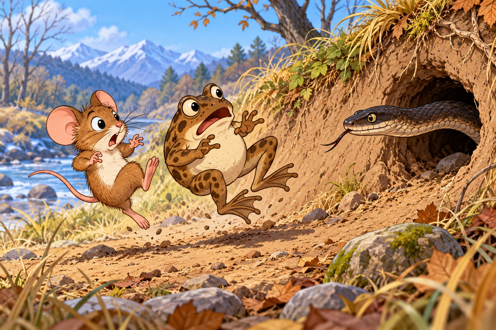
What is familiar and safe is often better than something new but uncertain.
The Lesson of True Respect
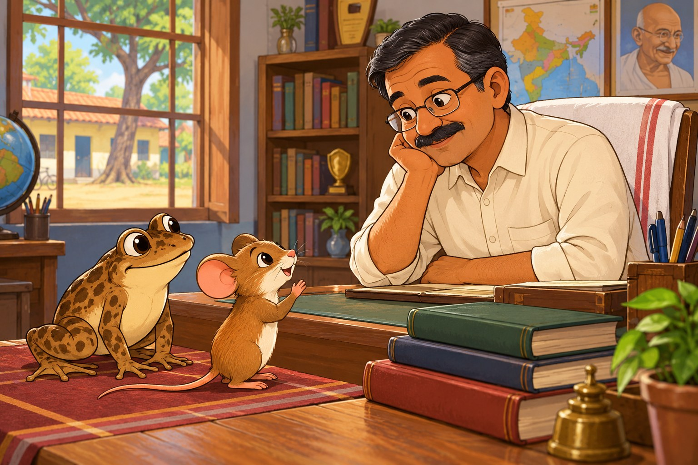
One sunny afternoon, Monty the Mouse and Flippy the Frog were sitting by the pond, sharing stories.
“Brother Flippy,” said Monty, “I must admit, you are an amazing jumper! You can leap so high into the air.”
Flippy swelled his chest and croaked proudly, “Oh, we frogs are masters of jumping! Our name is famous all over the world. Did you know that in human schools, children even have a ‘Frog Jump’ race? They crouch down and hop just like us to see who is the fastest.
Monty had never heard this before. He exclaimed, “Really!”
Flippy proudly declared, “It is a matter of great honour for the frog family that humans are holding a competition in our name. Our name has been etched in history.”
Monty felt a little sad and twitched his whiskers. “We mice can jump high too,” he said with a sigh. “But no competition is held in our name in any school.”
Flippy pretended to comfort his friend. “Well, there is a very old book of stories by Vishnu Sharma titled Mitralabha. Human beings love to read that book. I once heard a story from it in which two sages named Tamrachuda and Bruhatsphika talking about a mouse named Hiranyaka. He jumped so high that he reached Tamrachuda’s bundle of rice hanging from the ceiling! Bruhatsphika was of the opinion that mouse did not have the power to jump to such a height. Hiranyaka could do this only because of its wealth power. Then, the two sages dug out its hole and took away the grain, rice, and green gram that it had stored. After Hiranyaka lost its wealth, it could no longer jump high. This story implies that the mouse’s jumping ability was not due to its own strength, but due to the strength of its wealth. Vishnu Sharma has also written that even wicked people can achieve great things with the power of wealth.
Monty felt upset and said, “So, Vishnu Sharma has written many things against the mouse community. What a terrible defamation! It seems as if we mice are capable of jumping only because of what we steal.”
“All that is meant for humans to read.” Flippy tried to console.
Monty asked, “He has written such things about mouse jumping, but has he written anything about mouse running?”
Flippy answered, “No my dear friend, not at all.”
“Well,” Monty said, standing up tall, “If they won’t have a ‘Mouse Jump,’ they should at least have a ‘Mouse Race’! We are the fastest runners. It would increase a little respect for us. Our name would be written in the pages of history.”
Flippy nodded. “That is a wonderful idea, Monty! We should do something about it.”
The two friends discussed this matter at length. Finally, they decided to visit the local school to speak to the Headmaster. They found the Headmaster sitting alone in his office. Monty and Flippy bowed low, touching their foreheads to the floor to show respect. The Headmaster gladly welcomed the tiny visitors.
“Sir,” Flippy began, “We came to know that you have a ‘Frog Jump’ contest among children during your Sports Day.
The Headmaster said, “Yes, During Annual Sports and Games Day, this competition is held. Small children take part in it.”
Flippy danced in joy and said, “Thanks a lot sir. It’s an honour for the frog community. We are highly grateful to you for that.”
“You’re welcome!” said the Headmaster.
Flippy introduced his friend. “This is my friend Monty. He has come to you with a request.”
The Headmaster looked at Monty.
Monty stepped forward bravely. “Sir, just as you are conducting a Frog-jumping competition in the school, please conduct a ‘Mouse Race’ competition as well. You know that the mouse community has a great reputation as fast runners. It would be an honour for us. We would remain ever grateful to you.”
The Headmaster tapped his chin thoughtfully. “That is an excellent suggestion, Monty. I gladly accept your proposal! I will announce a ‘Mouse Race’ for next year’s Sports Day.”
Monty was so happy that he almost started dancing. But then, the Headmaster looked serious.
“However,” the Headmaster said, “I have one condition.”
Monty stopped dancing. “What is it, Sir?”
“You must take a solemn oath,” said the Headmaster. “You must promise that you and your family will never, ever nibble on the children’s notebooks or damage their schoolbooks in future. If you promise that, the race is yours.”
Monty’s face fell. He looked at the ground and whispered, “Oh... I don’t think I can promise that, Sir. Chewing on paper and books is just... what we do. It is our nature. A creature cannot easily change its nature.”
The Headmaster shook his head and spoke clearly, “Then I am sorry, Monty. I cannot help you. No one should help a harmful creature with bad habits.”
Monty and Flippy walked out of the office in silence. As they headed back to the pond, Flippy put a supportive arm around Monty.
“You see, friend,” Flippy said gently, “bad habits cannot be hidden forever. If you want to be famous and respected, you have to do good things first.”
Monty didn’t utter a word. He simply kept walking, thinking deeply about his sharp little teeth.
The Moral of the Story:
Respect and honour are earned through good actions, not just through natural abilities.
The Price of Greed
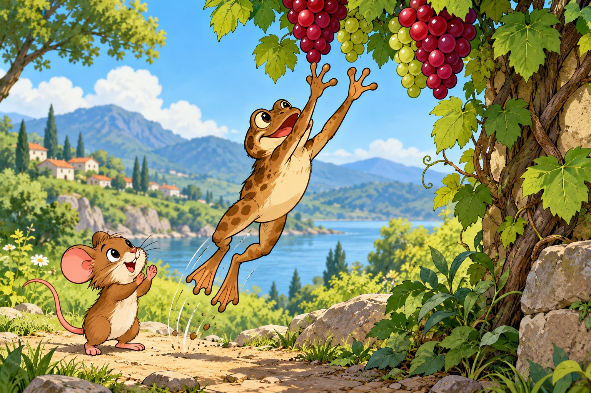
One day, Monty the Mouse said to Flippy the Frog, “Brother Flippy, you are a wonderful jumper, aren’t you?”
Flippy puffed out his chest and replied proudly, “Of course! We frogs are world-famous for our jumping. Everyone knows that!”
Monty then said, “Could you do me a small favour? I found a grapevine full of beautiful, ripe grapes. I tried to jump and reach them, but I failed. I even tried to climb the vine, but I slipped and fell before I could reach the fruit. Since you are such a great jumper, please help me get some. I really want to taste them!”
Flippy frowned and said, “Why are you crazy about those grapes? They are very sour.”
Monty laughed and said, “Oh, you must have read that old story about the fox! That was long ago. A fox tried to reach the grapes, failed, and said they were sour just to console himself. But nowadays new varieties of grapes are available in market. Some are red and some green; some have seeds and some don’t. They are sweeter than sugar!”
Flippy asked, “Have you actually tasted them, or have you just heard about them?”
“I heard a man eating them,” Monty admitted. “He said they were delicious. He threw away a seed, and I ate it. It is hard to tell the taste from just a seed, but I’m sure they are sweet!”
So, the two friends went to the grapevine. The grapes were hanging very high up. Monty cheered, “Go on, Flippy! Jump and grab a bunch!”
Flippy jumped as high as he could. Boing! But he couldn’t reach them. He tried four more times until he was completely exhausted. Finally, they gave up and returned empty handed.
Flippy sighed, “No one in my family has ever eaten grapes. I thought I would be the first ‘Grape-Eating Frog’ in history, but I failed.”
“Don’t worry,” Monty said with gleaming eyes. “I have another plan. This time, the grapes will definitely be ours. I’ll make sure you eat first, and then I will eat.”
Monty decided to use his sharp teeth. He thought, “I can bite through wood and stone; this vine is nothing!” The next day, he found out the main root of the grapevine and gnawed it right through.
Because the main root was cut, the vine could no longer get water or food. Slowly, it began to wither. Its leaves turned brown and dry. As the vine died, the grapes also began to shrivel and lost their shine. Everyday Monty used to visit the grapevine to check its condition. Eventually, the dried grapes fell to the ground.
Monty was waiting. He quickly gathered the fallen grapes and ran to the pond, where Flippy was resting.
“I promised you should be the first to eat,” Monty said proudly. “Look! My plan worked. Go ahead, try one!”
Flippy took a bite. Immediately, his face twisted in disgust. “Ugh! This is horrible! It tastes rotten and bitter!”
Monty, who had been waiting for his turn, took a bite too. He made a terrible face. The grapes were awful. “Why do they taste so bad?” Monty cried in disgust, “The humans said they were sweet. You can never trust humans!”
Flippy shook his head wisely. “The humans were right, Monty. The grapes tasted sweet as they ripened naturally on the vine. But because you killed the plant out of greed, the fruits fell prematurely and became bitter. When you do something wrong or dishonest, you can never enjoy the reward. A wicked act never brings a sweet result.”
Monty had no reply. He sat silently, realizing that his clever plan had ruined everything.
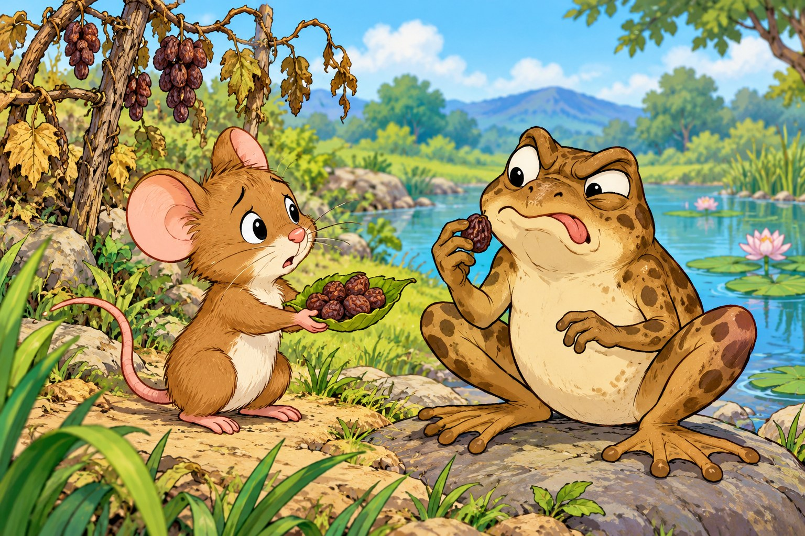
The Moral of the Story:
What is gained through greed or dishonesty can never be truly sweet. Honest effort only brings the sweetest rewards.
The Mouse’s House
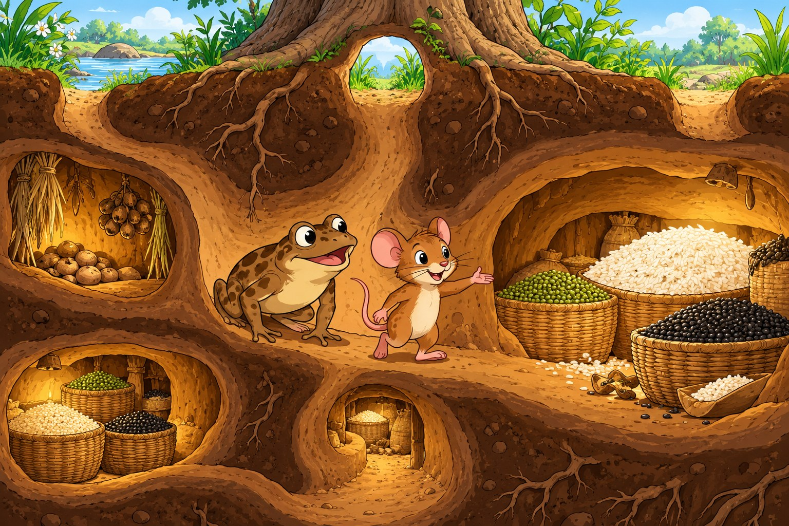
Flippy the Frog had a house right by the edge of the pond. When he felt like it, he stayed in his house, and when he wanted to play, he took big dives into the water.
His friend, Monty the Mouse, lived on the other side of the pond’s high bank. Monty spent his days wandering through the grain fields, collecting rice, mung beans, and black grams to store in his cozy home for future. Whenever he gets time, he visits his friend Flippy to chat with him.
One day, Flippy said, “Monty, I am really eager to see your house!”
“Come along then!” Monty welcomed happily. “I’ll show you today.”
Monty led the way, and Flippy followed, hopping behind him. Monty’s house was a burrow dug deep under the roots of a big tree. He took Flippy inside and showed him everything—where he ate, where he slept, and his grand storeroom filled with piles of grain.
Flippy saw the entire house and became very happy.
Monty asked, “Did you like my house?”
Flippy answered, “Wonderful! I am very much impressed, but one thing I don’t like.”
“What is it?” Monty asked.
“Why are there so many doors?” Flippy asked. “I noticed three or four different openings leading outside. Why do you need so many?”
Monty replied with a smile, “A house should always have at least two ways out. This is written in the scriptures. I also learned this from watching humans. Long ago, humans had a front door for happiness to enter and a back door for sorrows to leave. Now, many humans live in flats with only one front door, so their joys and sorrows stay mixed together!”
Flippy laughed. “You sure know a lot about humans!”
“We have to!” Monty said. “We live near them and share the crops they grow.”
“So, you followed humans and have built so many doors in your house.” Said Flippy.
“I have built this house with much thought and consideration. You’ll understand it soon.”
A few days later, while Monty and Flippy were chatting by the pond, a big snake suddenly hissed and lunged at them!
Flippy immediately did what frogs do best—he took a giant leap and splashed into the middle of the pond. The snake searched for Flippy’s house and poked its head inside, but Flippy wasn’t there. He was safe in the deep water, watching from a distance.
The snake then turned its hungry eyes towards Monty. Monty turned and ran as fast as his little legs could carry him towards his burrow. The snake saw exactly where Monty went and slithered right after him.
The snake poked its head into the front door of the burrow. But Monty didn’t stay inside! Because he had many doors, he slipped out through a secret exit on the other side and went skipping away into the grain field.
The snake went all the way into the hole, but found nothing but piles of grain. Since snakes don’t eat beans or rice, it came out feeling very disappointed and slithered away hungry.
Flippy was watching this from a safe distance, genuinely worried for his friend. He breathed a sigh of relief when he saw the snake retreat, clearly disappointed.
The next day, the two friends met again by the pond.
“That was a close call!” Flippy said. “I’m glad I jumped into the water. If I had stayed hidden in my house, the snake would have caught me easily.”
Monty nodded. “And as for me, as soon as the snake put his head in my front door, I slipped out through the back door! It couldn’t catch me at all. Because my house has three doors”
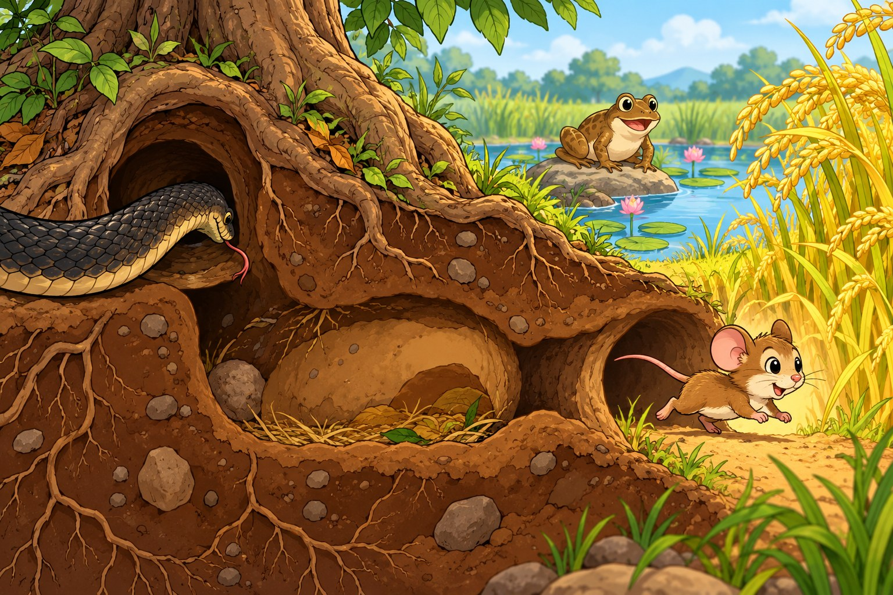
Flippy smiled and said, “Ah, now I get it, Monty—why your house has so many doors.”
The Moral of the Story
Intelligence and preparation are the best shields.It is always better to think ahead and have more than one way to solve a problem.
Which Season is the Best?
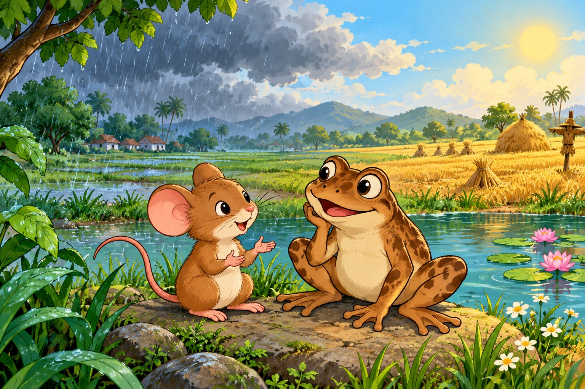
One afternoon, Monty the Mouse and Flippy the Frog were chatting. Soon, their conversation turned into a long debate.
Monty asked, “Flippy, tell me, which season do you think is the best?”
Flippy hopped excitedly and croaked, “The rainy season is the best, of course!”
Monty made a face and asked crossly, “What is so good about the rain?”
“Oh, everything!” Flippy replied. “When the rain falls, our hearts are full of joy. We jump in the puddles and play. The rivers and ponds fill up with cool water. We even have grand frog weddings and we sing our loudest songs only when it rains. There is no time better than the monsoon!”
Monty sighed deeply. “The rainy season makes us very sad, Flippy. The water leaks into our burrows. We can’t stay inside our homes anymore. All our hard-earned wealth—the rice, the beans, and the grain— gets soaked and ruined. We have to run around in the cold and wet, looking for shelter. Our fur gets drenched, we catch terrible chills, and many of us even fall sick and die. The rainy season is fatal for us.”
Hearing Monty’s sad story, Flippy’s eyes filled with tears. “I am so sorry, Monty. I never knew the rain is so dangerous for you. Please tell me then, which season is the best for you?”
Monty’s eyes brightened. “ Summer is the best! The harvest is over, and the fields are full of leftover grain. We collect those grains. We run and play in the fields with happy hearts. You know, our paws don’t like being wet; we need dry soil to run fast. Summer gives us the dry earth we love for our dances.”
Now it was Flippy’s turn to be sad.
“Summer is a very difficult time for us,” Flippy said softly. “The rivers and ponds dry up. We can’t find a single drop of water to drink. When the water vanishes, the small fish and water bugs die, and we have nothing to eat. We dig deep into the mud looking for moisture, but everything is parched. We wander around searching for water, and that is when the snakes catch us. They kill and devour us. For a frog, there is no season more painful than the hot summer.”
Both friends fell silent for some time. They felt sad thinking about each other’s struggles, but they also felt happy remembering their favourite days.
Finally, Flippy said, “I suppose this is simply how Nature works. The seasons change, and with them, our joys and sorrows shift as well. What is a playground for one can be a battlefield for another. One season brings a feast to some, while to others, it brings nothing but hardship. Such is the cycle of life.”
“You are right,” Monty agreed gently. “Every season has its own story.”
The Moral of the Story
One person’s joy may be another’s hardship. We should always try to understand how others feel, even when life is going well for us.
Mice and Humans
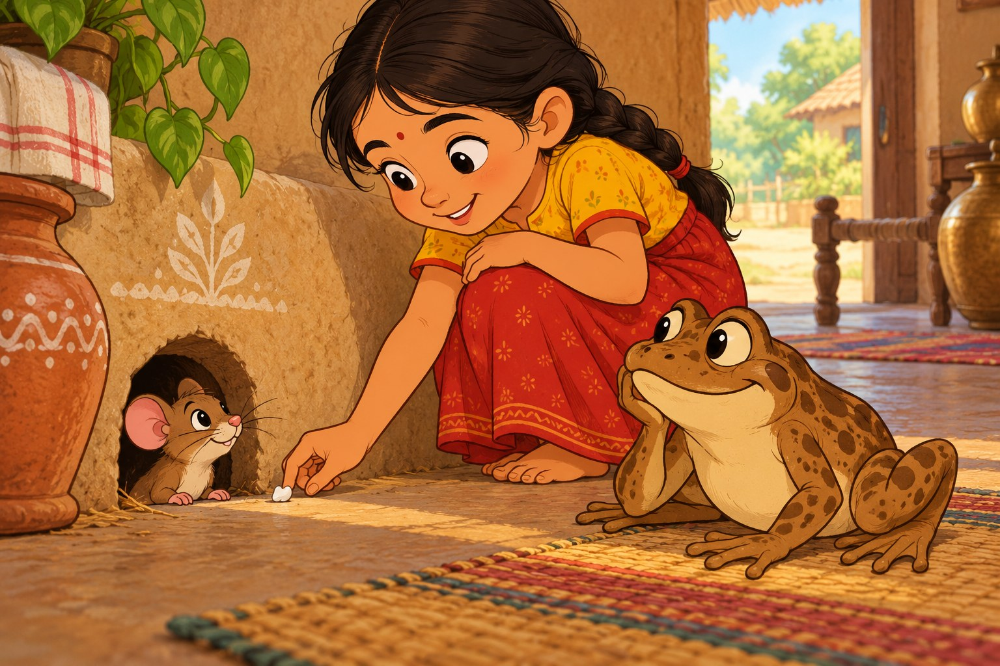
One day, Monty the Mouse looked very thoughtful. He turned to Flippy the Frog and said, “You know, Flippy, humans used to love us mice very much. But I don’t know what happened—now, whenever they see us, they chase us away or try to hurt us. The more I think about it, the more confused I get.”
Flippy exclaimed, “Humans loved you? When was this?”
“In the olden days!” Monty replied. “Lord Ganesha chose the mouse to be his royal vehicle. Because of that, humans used to worship us during Ganesh puja.”
Flippy shook his head. “Oh, Monty! That was a matter of the past. People worship your idol, but they lose their temper the moment they see a real one!”
“That’s exactly what I don’t understand,” Monty sighed. “Why worship the idol but chase the real one? It makes no sense!”
“Human behavior is hard to figure out,” Flippy remarked. “They worship snakes as gods, but kill them if they enter their house. They worship cows, but make oxen work hard in the fields. They don’t worship dogs, yet they keep them as beloved pets. Humans are complicated.”
Monty continued his story. “I remember when every house had a little mouse-hole in the corner. People didn’t block them up. In fact, when a child’s baby tooth fell out, the parents would tell the child to drop the tooth into the mouse-hole. You must be knowing that humans in their childhood lose their first set of teeth to grow new ones.”
Flippy’s eyes widened. “Really? I never knew that!”
“Yes!” Monty said. “The children would drop the tooth in the mouse-hole and say, ‘Brother Mouse! Take my old tooth and give me a new one. Give me a strong tooth! Give me a shiny tooth!”
“They gave you so much respect!” Flippy exclaimed.
Monty replied sadly, “Yes, they did. We used to preserve that tooth in our hole and pray to our master, Lord Ganesha, to grant that child strong tooth and wisdom. But now, people have replaced mud houses with concrete ones. They use tiles and marble floors. We can’t dig holes anymore. The tradition of the ‘tooth-hole’ is just a dream now.”
“And what happens to children’s teeth now?” Flippy asked.
“The new teeth they grow aren’t strong at all,” Monty grumbled. “They get damaged soon, and parents have to rush their kids to the dentist to get them pulled out. The strong, healthy teeth we used to help them get... those days are gone!”
Flippy clucked in sympathy, “tut-tut!”
Monty added, “In those days, every house had a quiet, dark corner. If the loving young girl of the family was upset or angry, she would hide herself in the untidy ‘Mouse Room’ and cry till her family came to comfort her and fulfill her demand. During her stay there, we watched over her and prayed for the fulfilment of her wish. But today, humans barely have enough space for themselves. Why should one reserve a room specially for us with the poops of mice and cats?”
“Everything has changed, hasn’t it?” Flippy said.
“But humans have changed the most,” Monty said bitterly. “They forgot all the good we did. Now they chase us with sticks. But they are paying for their misdeed—just see how everyone has bad teeth these days!”
Flippy looked at his friend thoughtfully and said, “Listen, Monty. I’ve watched humans too. They aren’t all so bad. If you truly did so much good for them, they wouldn’t be so ungrateful for no reason. Think about it—how much damage do you cause them compared to the help you give? If you count it up, you will find that mice have been causing them quite a bit of trouble lately. That is why humans chase you.”
Monty fell silent. He had nothing left to say.
The Moral of the Story;
Respect is a two-way street. If we want others to treat us well, we must also act responsibly and avoid causing harm.
The Circus Mouse
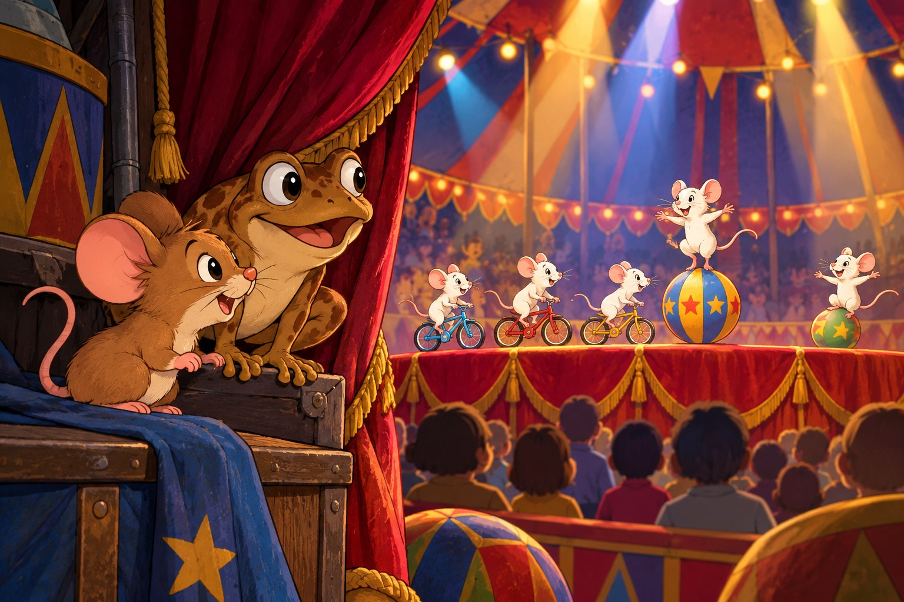
One day, Flippy the Frog brought some exciting news to Monty the Mouse.
“I heard a circus troupe has arrived in the nearby town! They are performing breathtaking feats.” Flippy said. “Everyone is going to watch the show.”
Monty shook his head. “Are you inviting me to a circus? No way! It’s too dangerous for a mouse to go there.”
“But Monty,” Flippy insisted, “they have about ten mice in the circus! They perform tricks, and the audience claps and cheers for them. The circus master treats them like royalty!”
Monty’s eyes widened. “What? Humans are actually happy to see those mice? They clap for them? How fortunate those mice are! Look at our luck—humans chase us with sticks the moment they spot us! Those circus mice live in luxury while we rot here in the mud and dirt.”
Flippy nodded. “That’s why I want to go. Let’s find out the talent they have that earn them special recognition.”
Monty said, “You are right, friend.”
The two friends set off. Monty ran ahead, and Flippy followed with big hops. Soon, they reached a giant tent. People were buying tickets and lining up at the gate.
“I could chew a hole in this tent in seconds,” Monty whispered. And he did! Using his sharp teeth, he made a small opening, and the two friends slipped inside.
“Your teeth are wonderful!” Praised Flippy.
Inside, they saw a grand setup. People were seated in the gallery, and in the center, a circular stage awaited the display of tricks. Lights sparkled brilliantly, adding to the spectacle. They saw tigers, elephants, and camels performing amazing feats. But Monty was only waiting for one thing: the mice.
Finally, a clown pushed a table into the center. It was covered in red velvet, and on top sat a cage with five snow-white mice. A beautiful girl followed, holding a small wand. She opened the cage, and the white mice hopped onto the table. The cage was removed. Under the bright spotlights, their white fur shimmered beautifully.
The girl raised her wand. “Jump!” she commanded. The white mice leaping gracefully across the red velvet looked absolutely brilliant. The audience roared with applause. The mice even played with tiny balls and rode miniature bicycles.
“I can also do exactly like that!” Monty whispered to Flippy.
After the show, the cage was brought. They entered into the cage. The girl left the stage with the cage. Monty and Flippy followed the mice to the back of the circus where the animals were kept. Monty found the white mice in their cage and approached them.
“Brothers!” Monty said. “How did you get such a wonderful job? Is it possible for me to get a job here?
The white mice sneered at Monty for his complexion. “We are white, fair and lovely. That is why the master brought us here. You are black, dirty, and ugly. No one would clap for you; they would only scream and chase you away!”They mocked.
Monty felt deeply hurt. Flippy pulled him away and said, “Come on, let’s go home.”
On the way back, Monty felt miserable. “If only I were white, Flippy! I could enjoy a life of luxury in the circus.”
“Well,” Flippy said thoughtfully, “ Changing the colour of body is not a difficult task at all. I’ve seen humans change the colour of their hair from white to black. Maybe there is a way to change your fur from black to white?”
Monty’s hope returned. “Is there really a paint like that?”
Flippy assured, “Surely! You search for white colour.”
He began to search everywhere until he found a bucket of lime wash (white calcium paint) left behind by a painter. “I found it! I found it!” Monty cried out in joy.
Without a second thought, he jumped straight into the bucket. He soaked himself in the thick, white liquid until every hair was coated. But suddenly, his skin began to sting. It burned like fire as lime was a harsh chemical.
Monty scrambled out and ran towards the pond screaming, “Flippy! Help! I’m burning! I’m dying!”
Flippy rushed out of his hole. Monty was shivering and writhing in pain. “Pour water on me!” Monty begged.
“No!” Flippy cried. “Water will make the lime react even more and make it worse!” He grabbed an old rag and desperately began wiping the lime off Monty’s skin.
After sometime Monty calmed down. Feebly he asked, “Am I... am I white now, brother?”
Flippy sighed. “Don’t be foolish, Monty. You almost lost your life! We cannot change what nature has made us. Trying to be something you aren’t only leads to disaster.”
Monty agreed, “You’re absolutely right.”
Monty gave up his dream to be white.
The Moral of the Story;
Be happy with who you are.True happiness comes from accepting yourself, not imitating others.
Forgiveness Is the Noblest Response
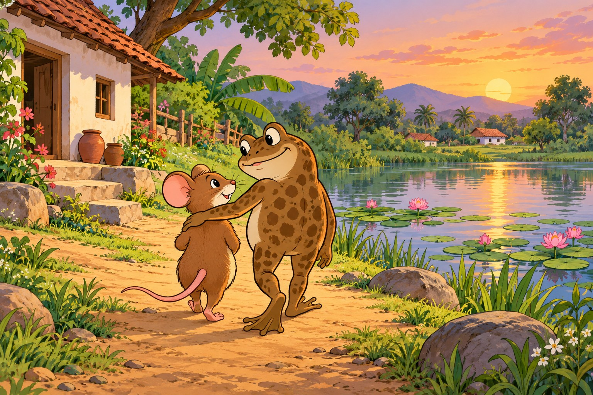
One day, Monty the Mouse and Flippy the Frog were chatting. As usual, their conversation soon turned towards humans.
Monty asked, “What do you think of humans, Flippy?”
Flippy replied, “I have no enmity with them. They don’t bother me, and I don’t bother them.”
Monty sighed. “But humans consider me their arch-enemy! They chase me the moment they see me. And yet, I hear they are trying to save snakes now. Snakes are so venomous! Hundreds of humans die from snakebites every year, but still, they protect them. I just don’t understand.”
“I’ve heard that too,” Flippy said. “But there must be a reason. Humans don’t do anything without a cause. As for us frogs, they don’t love us, but they don’t hate us either.”
Monty disagreed. “Maybe they don’t bother you, but isn’t it a threat to both of us if they help in increasing the snake population? Don’t take the side of humans, Flippy. They are cruel creatures. Ther is no doubt about it.”
Flippy said, “Actually, there is a belief among humans that if someone kills a frog, they will become deaf. That’s why they usually don’t lay a finger on us.”
Monty argued, “Snakes are the mount of Lord Shiva, so humans respect them and even feed them milk. By that logic, we mice are the mount of Lord Ganesha—so why don’t they spare us? I hate this partiality!”
Flippy replied, “We might not be the mount of any God, but at least they don’t chase us.”
However, the very next day, something happened that made Flippy very sad. A ten-year-old boy came to the pond. He saw Flippy sitting by the water and a mischievous thought entered his mind. He began poking Flippy with a stick.
Flippy tried to warn him in his own way: “Boy! Don’t do that. Whoever harms a frog becomes deaf. Don’t make that mistake!”
But the boy didn’t listen. He grew even more mischievous. He caught Flippy by one leg and lifted him into the air. To defend himself, Flippy urinated. Feeling the wetness, the boy got angry, swung Flippy around, and threw him far away.
Luckily, Flippy landed on soft grass and wasn’t badly hurt. He struggled to his feet, looked around, and quickly hopped back into the safety of the pond, swimming to the other side.
The naughty boy looked for the frog but couldn’t find him, and eventually went home.
When Flippy met Monty later and told him everything, Monty shook with rage. “I told you! Humans are not trustworthy. You called them helpful, but is this how a ‘helpful creature’ behaves?”
Flippy had no answer and remained silent.
Monty continued, “Tell me what that boy looks like. I will find him and bite him hard! They don’t realize that a mouse bite can spread plague.”
Monty set off to find the boy, with Flippy hopping behind him, repeatedly saying, “Brother, let it go! Forgive him.”
After much searching, they found the boy’s house. They slipped inside and saw the boy’s father scolding him. “What sins did you commit in your past life that you were born deaf? And yet, you continue your mischief, wandering in the sun and hurting frogs. A friend told me you threw a frog into the air today!”
The boy’s mother said, “Why are you wasting your breath? He can’t hear or understand you!”
The father continued, “You must have killed many frogs in your previous birth, otherwise you wouldn’t be deaf in this one. If you keep behaving like this, your next life will also be ruined.”
The mother added, “We should send him to a school for the deaf and dumb. Maybe he will learn something there. Right now, he doesn’t understand a word.”
Flippy looked at Monty and said, “He is already deaf. What revenge is left for us to take? Let’s just forgive him.”
Monty softened and said, “Alright.”
And so, they both returned to their homes.
The Moral of the Story;
“Compassion is greater than revenge.” Sometimes, those who hurt/ harm others are already suffering from the consequences of their own actions. Forgiveness is often the noblest response.
The Clever Crane
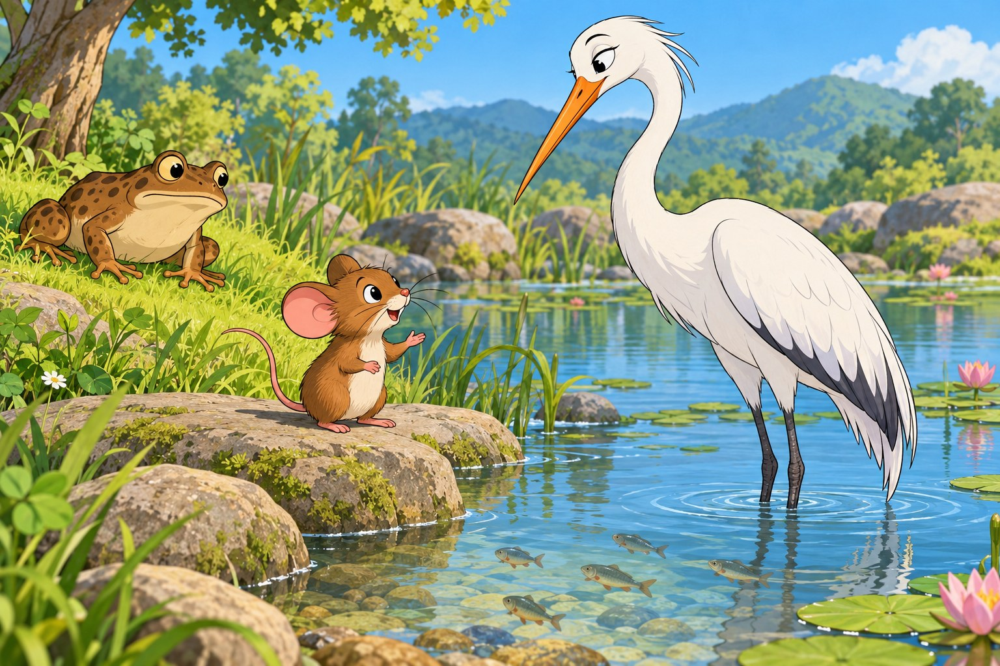
One day, a crane arrived at the edge of a pond. He stepped into the knee-deep water and watched the fish playing. Lifting one leg he stood perfectly still with his eyes closed, as if he were in deep meditation. Whenever fish swam close to him, he would suddenly strike with his long beak, catch one, and swallow it in an instant.
Monty the Mouse and Flippy the Frog were watching him from a distance.
Flippy said, “That crane doesn’t look like a good fellow.”
Monty asked, “Why do you think so? Have you ever seen him eat a frog?”
“I haven’t seen it,” Flippy replied, “but who knows! One who eats fish can surely eat a frog too. Right now, he has fish, so he’s eating them. When the fish run out, frogs will be his next target!”
Monty got scared and asked, “And what about mice?”
“Yes!” Flippy said. “If he gets the chance, he might attack a mouse too. Who would say that someone who eats frogs won’t eat mice? Think about the snake—it eats both frogs and mice. We must be careful.”
Monty started trembling in fear. “We have to remain alert.” He asserted. And Flippy agreed.
The crane began coming to the pond every day. No one knew where he lived, but every morning he would fly in from the sky, stand in the water, eat fish, and fly away before sunset.
Flippy said to Monty, “Brother, the way he is hunting, this pond will be empty of fish very soon.”
Monty added, “Once the fish are gone, he will turn to us. We need to drive him away.”
“But how?” asked Flippy. “I’m too scared to go near him. He has such a long neck, a long beak, and long legs. One giant leap for me will be a small step for him.”
Monty began to think of a plan. Flippy suggested, “I’m thinking of inviting a snake here. The scriptures say to remove a thorn with a thorn—destroy an enemy with another enemy.”
Monty stopped him. “Don’t make that mistake, brother! Have you forgotten the old story of your ancestor, Gangadatta? He invited a snake named Priyadarshan into his well to get rid of his troublesome relatives. The snake ate all his relatives, but then refused to leave. In the end, it devoured Gangadatta’s own family, including his son Jamunadutta. At last, Gangadatta had to stealthily leave the well to save his life. We shouldn’t repeat such a mistake.”
“Then what should we do?” Flippy asked.
“Let me think,” Monty said. After a while, he added, “I will make friends with the crane and trick him into leaving.”
Monty went to the crane and said, “Brother Crane! You are truly a beautiful creature.”
“Really?” asked the crane.
Monty continued, “Such lovely white feathers, a graceful long neck, and long legs! Even your beak is beautiful. God has made you with great care.”
The crane was very pleased with the praise. “You speak very kind words, friend. But tell me, why all this praise?”
Monty replied, “I feel this pond is not the right place for you. The water is dirty and polluted. The fish here are sickly. If you eat them, you might fall ill and lose your beautiful looks.”
The crane looked worried. “What do you suggest then?”
“I know of another pond,” Monty lied. “The water there is crystal clear and the fish are delicious. If you want, I can give you the address.”
The crane asked, “Where is it?”
Monty answered , “There is a village to the north of this pond. The pond is located at the end of that village.”
The crane said, “I used to hunt at that pond before. But there, I met a mouse just like you. He was the one who gave me the address of this pond! He told me the water here was sweet and the fish were tasty.”
Monty was stunned. This crane was indeed very clever! He wondered who that another mouse could be.
The crane then said, “Friend, I will take your advice. I will leave and find another pond. Since I can fly, finding another pond is not hard. But I must repay your kindness. Let me give you an address as well. There is a place with endless piles of paddy and pulses.”
Monty’s heart leapt with joy. “Where?” He asked.
The crane said, “From the sky, we can see everything. About two miles to the east of this pond, there is a village. At the entrance of the village stands a farmer’s house. Since he has no room inside, he has piled up all his grain and pulses in the backyard. If you go there, you will have enough food to last a lifetime. And there are no cats in that house, so there’s no need to fear.”
The crane then flew away. Monty was delighted that his plan had worked. He told Flippy how he had tricked the crane into leaving.
However, Monty couldn’t stop thinking about the farmer’s piles of stock. The next morning, he set off towards the east. He found a village, but no matter how much he searched, he couldn’t find the farmer’s house or the piles of grain. After two days of wandering, he returned home exhausted, weak, and ill.
When he returned, Flippy met him and asked, “Where did you go? You look so terrible! What happened?”
Just then Monty saw the crane standing by the pond, in his usual meditative pose, watching the fish. Monty went up to him.
“Brother Crane, you lied to me!” Monty cried.
The crane replied calmly, “And had you told me the truth?”
Monty fell silent.
The crane continued, “I knew you were trying to drive me away. But listen—this earth belongs to all of us. We all must live here. Enemies and friends alike have a right to exist. The fish, the crane, the frog, the snake, the mongoose, the mouse, and the cat—everyone must live their own lives. We just need to be a little cautious and watch out for ourselves. Otherwise, who knows when whose life will end?”
“True!” said Flippy. “True!” agreed Monty.
The crane concluded, “You live your life, and I will live mine.”
The Moral of the Story;
“Honesty is the best policy.” Tricking others often leads to being tricked ourselves. Coexistence and self-awareness are more important than trying to deceive those we fear.
The Search for Venom
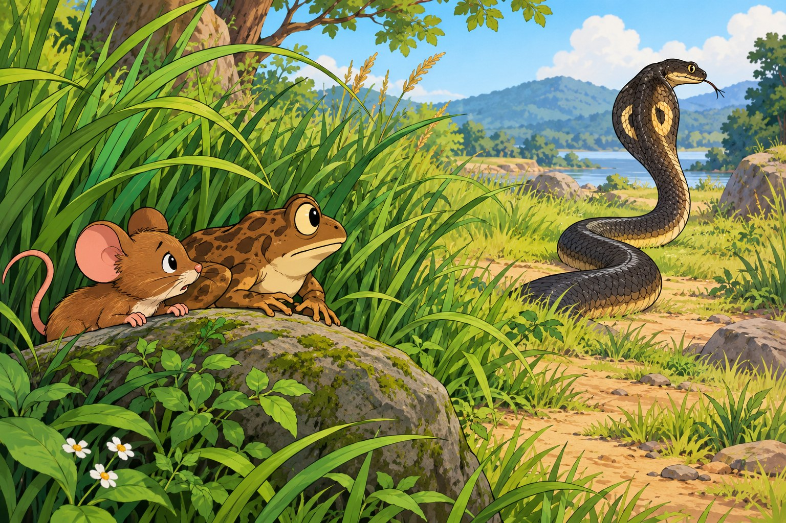
One day, Flippy the Frog witnessed a terrifying sight.
As he sat quietly by the pond, he saw a man arrive at the opposite bank carrying a net. With one swift swing of the net, he caught two frogs. As they struggled helplessly, the heartless man stuffed them into a container without any mercy.
Flippy trembled with fear. “Humans aren’t usually our enemies,” he thought. “So, who is this man? Why did he take them?”
Flippy was safe only because he had been sitting on the far side. The man looked around, searching for more, but the other frogs had already dived deep into the mud.
Later that day, when Monty the Mouse came, he found Flippy in tears. Flippy sobbed as he described everything. “I could have died today, Monty! That cruel man took our brothers.”
Monty looked serious. “I know who that man is, Flippy. I know exactly what he wants.”
“Who is he? Why did he catch frogs?” Flippy asked nervously.
“He works for a college,” Monty explained. “It’s a place where humans go to learn. He is a ‘Specimen Collector.’ The frogs are the specimen".
“What does he do with the frogs?” Flippy enquired.
Monty explained, “He captures frogs and takes them to the laboratory. There, students cut them open with knives and scissors to study how their bodies work. It’s how they learn their lessons.”
Flippy was horrified. “Can’t they find something else to study? Why must they be so cruel to innocent frogs? This is an injustice! If we don’t stop this, our entire race will be wiped out.”
They both were lost in deep thought. Finally, Flippy said, “It’s only because we don’t have venom. Humans think we are harmless, so they feel they can do whatever they want to us. If frogs were poisonous, they wouldn’t dare touch us!”
Monty nodded. “You’re right, friend! Everyone fears the snake because of its venom. No one fears us, so we are easy targets. We must find some venom of our own. It’s the only way to survive in this world.”
The next day, the two friends set out on a “Venom Expedition.”
Monty shared a secret: “Everyone knows snake is the most poisonous creature. I’ve heard that when a snake has too much venom, it spits the excess out onto the ground.”
“Is that true?” Flippy asked. “I only knew they shed their skin!”
“They shed their venom too,” Monty insisted. “If we follow a snake, we can find where he spits it out. Then you can eat it and become poisonous yourself!”
Flippy clapped his webbed feet. “A brilliant plan! Let’s do it.”
They began following a snake that lived in a nearby bush. It was a dangerous game. Staying at a safe distance, they tracked the snake through the fields and tall grass.
“Flippy,” Monty whispered, “this is very risky. If the snake sees us, we’re finished.”
“Don’t worry,” Flippy replied bravely. “I am doing this for my people! My name will be written in golden letters in history as the frog who saved his race.”
Days passed. They followed the snake everywhere, but they never saw him spit out any venom.
“Are you sure about this, Monty?” Flippy asked, tired and hungry. “We’ve been at this for days.”
“Be Patient, friend,” Monty whispered. “The fruit of patience is sweet.”
But the snake wasn’t unaware. He had noticed the rustling behind him for days. Every time he turned around, the mouse and the frog would dive into the grass. Finally, the snake lost his temper. He turned around suddenly and spread his hood wide.
“How strange!” the snake hissed. “A mouse and a frog chasing a snake? Has the world gone mad? Usually, the hunter chases the prey. Now the prey is chasing the hunter? This is an insult to snakes! Tell me your purpose, or I shall turn you both into a midnight snack.”
Monty peeked out from behind a rock. “O King of Serpents! We mean no insult. We know you are so powerful that you can devour us at once. But we are doing this for the welfare of frogs. Humans are taking my friend’s family to the college to cut them open. They do this because frogs have no venom to defend themselves. We are following you hoping to find some of your leftover venom so that Flippy can become dangerous too.”
The snake let out a cold laugh. “Do you think you can get poison by following me? I will spit venom that the frog will lick to be poisonous? Nature has made each creature as it is, and that cannot ever be changed. Stop this nonsense and go home.”
The snake continued, “Have you heard the story of the two jackals? They followed a bull for years, believing its swaying hump would fall off someday. They waited their whole lives, but it never did. In the end, they died waiting.You are making the same mistake—chasing something that will never be yours.” It paused, then added, “Today, I spare you. But if you follow me again, I will swallow you both. Now run!”
Monty and Flippy didn’t need to be told twice.
They ran as fast as they could.
“Let’s go home, Flippy,” Monty said. “We’ve wasted enough time chasing things that aren’t meant for us.”
“You’re right,” Flippy sighed.
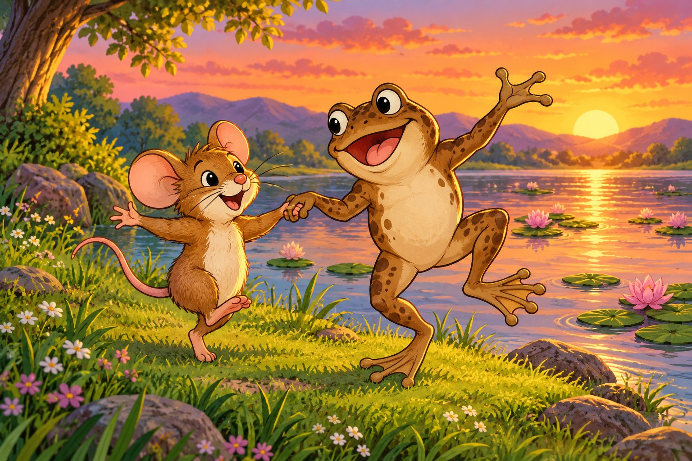
They returned to their favourite spot by the pond. Instead of trying to be poisonous, they spent the evening singing, dancing, and enjoyed the life they were blessed with.
The Moral of the Story;
“Accept yourself as you are.” Chasing someone else’s power or nature is a waste of time. It is better to live your own life with joy than to risk it trying to be something you were never meant to be.